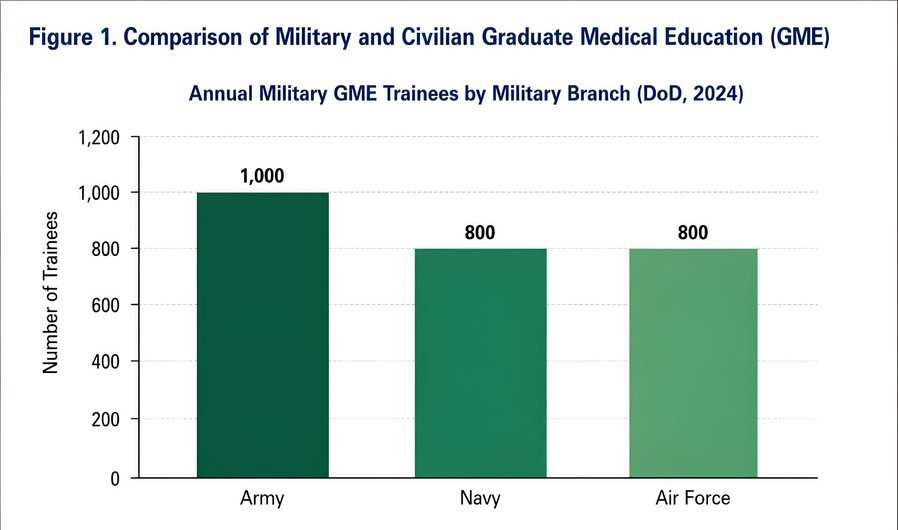

PerspectiveA3
Graduate Medical Education and the United States Military: Structure, Integration, and Comparative Perspectives
Colorado Technical University · Cleveland Clinic Foundation
- Article type
- Perspective
- Published
- August 2026
- DOI
10.70785/XZGA3877- Access
- Peer reviewed, open access
Abstract
This paper analyzes the relationship between Graduate Medical Education (GME) and the United States military. Drawing on quantitative data, comparative analysis, and firsthand experiences, it examines the structure of military GME programs, their integration within military healthcare, and the unique expectations placed on military trainees. Perspectives from physicians who have completed both military and civilian residencies, along with a representative case study, illustrate the challenges and advantages of each training pathway. The findings offer practical recommendations for medical students, educators, and policymakers to inform decision-making, curriculum development, and future discussions surrounding military and civilian medical education.
Introduction
Graduate Medical Education (GME) is the critical phase of medical training that follows medical school and leads to board certification. In the United States, GME is delivered through residency and fellowship programs accredited by the Accreditation Council for Graduate Medical Education (ACGME). The U.S. military, which comprises the Army, Navy, and Air Force, maintains its own GME infrastructure to train physicians for service in military healthcare systems. Understanding the interplay between GME and the military is vital for prospective military physicians, educators, and policymakers seeking to optimize medical training and readiness.
Military GME Programs: Structure, Quantitative Data, and Pathways
The Department of Defense (DoD) oversees military GME programs across the Army, Navy, and Air Force. Each branch operates in medical centers and hospitals hosting ACGME-accredited residency and fellowship programs. In 2024, the military trained approximately 2,600 physicians annually across its GME programs, with the Army accounting for roughly 1,000 trainees, the Navy for 800, and the Air Force for 800. These programs span a variety of specialties, including internal medicine, surgery, psychiatry, and emergency medicine, and are designed to meet both civilian standards and military needs such as operational readiness and deployment preparation. Admission is typically reserved for individuals committed to military service, often through the Health Professions Scholarship Program (HPSP) or the Uniformed Services University of the Health Sciences (USUHS) pathway. Trainees are commissioned officers, receiving benefits and obligations associated with military service, including deployment readiness and leadership training.
Comparison: Military vs Civilian GME Programs
Both military and civilian GME programs adhere to ACGME standards, but notable differences exist. Military programs integrate military-specific training such as leadership development, operational medicine, and preparation for deployment, while civilian programs often focus on academic pursuits and research. Military hospitals prioritize care for active-duty personnel, their families, and veterans, resulting in a patient population distinct from civilian institutions.
Civilian programs are typically larger, with more diverse patient volumes and broader subspecialty training opportunities. For example, the average civilian residency program in internal medicine may train 30 to 50 residents annually, whereas military programs in the same specialty may train 10 to 20 residents per site. Research resources and subspecialty options are often more extensive in civilian centers, but military GME offers unique experiences, such as battlefield medicine and humanitarian missions.

| Feature | Military GME | Civilian GME |
|---|---|---|
| Annual Trainee Volume | Approximately 2,600 (DoD, 2024) | Varies by institution; often larger |
| Patient Population | Active-duty service members, families, and veterans | Diverse general population |
| Service Obligations | Military service and deployment readiness | No military service required |
| Leadership Training | Integrated and mandatory | Optional; less formalized |
| Post-Residency Commitment | Service obligation (4–7 years) | No post-residency obligation |
Abbreviations: DoD = U.S. Department of Defense; GME = Graduate Medical Education. Source: U.S. Department of Defense, 2024.
Military Trainees in Civilian GME: Anecdotal Experiences and Case Study
Not all military physicians complete their GME within military hospitals. Some are selected to train in civilian residency programs through “deferred” or “sponsored” positions, based on service needs and specialty availability. In 2024, about 15% of military GME trainees participated in civilian residencies. These individuals remain commissioned officers and are subject to military expectations, including participation in military activities and additional training.
Case Study: Dr. Brandon Specht, an Air Force physician, began his medical career through HPSP, completing medical school in a civilian institution before entering a civilian Plastic Surgery residency. He reported challenges in balancing military obligations (such as attending quarterly training sessions and maintaining fitness standards) with the demands of civilian residency. However, he found that his exposure to diverse patient populations and advanced research opportunities enriched his surgical and clinical skills. Upon completion, Dr. Specht transitioned to a military hospital position as well as a position in a civilian clinic, where he adapted to military protocols and assumed leadership roles. He highlighted that the military’s structured mentorship and operational training prepared him for potential deployment, as well as offering unique professional benefits.
Integration of GME in Military Structure: Impact and Outcomes
GME is a strategic component of the military healthcare system, ensuring a pipeline of board-certified physicians capable of meeting operational and clinical needs. Residency programs are closely aligned with the mission of military medical centers, which prioritize readiness, force health protection, and support for deployed operations. Military-trained physicians consistently demonstrate high adaptability, with 90% reporting readiness for deployment within six months of completing residency. The integration of GME within the military facilitates rapid responses to emerging medical challenges, such as trauma care innovations and infectious disease management.
Perspectives: Civilian vs Military Residency Experiences
Individuals who have completed both civilian and military residencies cite cultural and structural differences. Military residencies emphasize teamwork, chain of command, and deployment readiness, while civilian programs focus on academic pursuits and research. Military residents may face additional administrative duties and training scenarios, such as mass casualty drills and leadership courses. Civilian-trained military physicians appreciate the broader patient populations and research resources but require adaptation to military protocols upon returning to service. Flexibility and commitment to the values of both medicine and military service are essential for successful transitions.
Recommendations: For Medical Students and Educators
For Medical Students Considering Military Service
- Evaluate personal goals, willingness to serve, and readiness for military obligations.
- Research specialty availability and training environments in both military and civilian pathways.
- Seek mentorship from current or former military physicians to understand career trajectories and challenges.
- Consider the impact of service obligations on long-term career plans, including deployment and leadership opportunities.
For Educators Designing Curricula
- Integrate modules on operational medicine, leadership, and military ethics into civilian curricula for students interested in military careers.
- Facilitate collaborative training opportunities between civilian and military institutions to bridge gaps in experience and knowledge.
- Encourage research and case-based learning that addresses both civilian and military healthcare challenges.
- Support students in navigating dual identities and obligations through structured guidance and counseling.
Conclusion
The relationship between GME and the military is multifaceted, reflecting the dual imperatives of medical excellence and operational readiness. Military GME programs are structured to produce physicians capable of serving in both clinical and operational contexts. Quantitative data and case studies show the unique opportunities and challenges faced by military trainees, particularly those navigating civilian residencies. Insights from this analysis inform decision-making for prospective physicians, educators, and policymakers by highlighting the importance of flexibility, mentorship, and curriculum integration.
For policymakers, understanding the comparative features of military and civilian GME can guide resource allocation, specialty development, and recruitment strategies. For educators, designing curricula that bridge civilian and military training environments ensures that future physicians are prepared for diverse professional demands. Prospective medical students benefit from informed decision-making regarding military service, specialty selection, and career planning. Continued collaboration between civilian and military institutions will enhance the quality and readiness of the U.S. physician workforce, supporting both healthcare delivery and national security.
Conflict of interest. The author(s) declares no conflict of interest.
How to cite this article
Jones-Cleveland T. Graduate Medical Education and the United States Military: Structure, Integration, and Comparative Perspectives. FULGME. 2026;(3):A3. DOI: 10.70785/XZGA3877
Article Information
- Journal
- FULGME: Forum for United Leaders in Graduate Medical Education
- Publisher
- Forum for United Leaders in Graduate Medical Education
- ISSN
- 3065-582X
- Issue
- 3, August 2026
- Article number
- A3
- Article DOI
- 10.70785/XZGA3877
- Issue DOI
- 10.70785/JJXN8215
- Journal DOI
- 10.70785/IHSN6820
- Access
- Peer reviewed, open access, free to read
- Copyright
- Retained by the author(s)
- Licence
- CC BY-NC-ND 4.0
- Contact
- info@fulgme.org
Copyright and licence. © The author(s). This article is published open access under a Creative Commons Attribution-NonCommercial-NoDerivatives 4.0 International licence (CC BY-NC-ND 4.0). You are free to copy and redistribute it in any medium or format, with attribution to the author(s) and FULGME, provided you do not use it commercially and do not distribute altered versions.